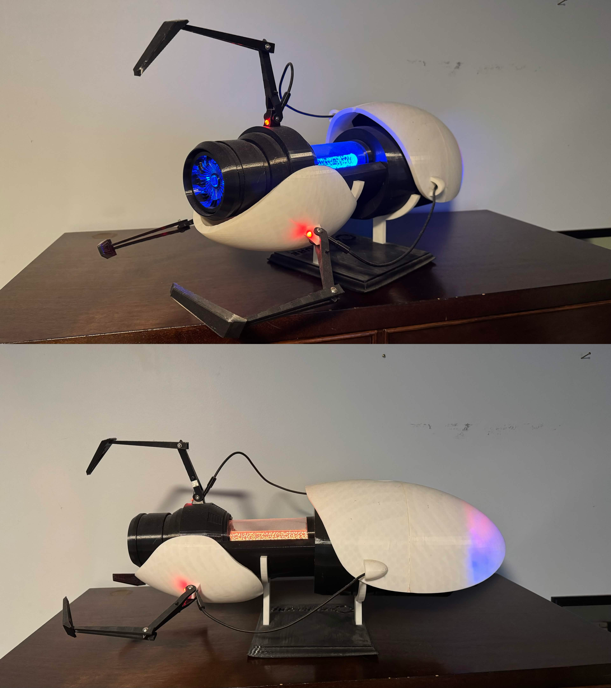
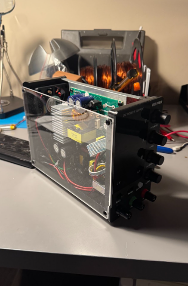
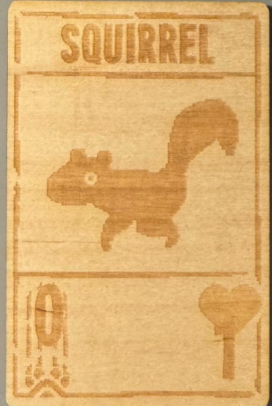

Handheld Portal Device Prop
First real project done on my own. Really got me into 3D Printing and engineering as a whole. Files were found on Thingiverse, and coding from a github repository. Based off of Valve's Portal and Portal 2 games. Buttons can change LED colors, as well as play respective sounds. Volume knobs also added on for convenience.

Lasercut Acrylic Plate
Because of the avalibility of a lasercutter at the high school, I used it to make my power supply see through. Not necesarrily useful but it needed to be measured to a degree of accuracy to fit the original machine. Visually looks better now.

Engraved Card
Created due to the same reason as the acrylic plate, because of the avalibility of a lasercutter at the high school. Had to manually figure out the tolerances and shading parameters for this material. The engraved image is based off of the game Inscryption developed by Daniel Mullins Games, representing the Squirrel card.
Tool Gun Prop
Most recent completed project. A "functional" prop based off of Garry Newman's "Garry's Mod." Most parts had to be designed manually, others were a modification of ones found from someone else's attempt at this project. The code was all custom and done in Python, running on a Raspberry Pi Zero. Features a customizable menu in case I ever need to change the visuals of the screen. Plays sounds, has lights, and even moves when the trigger button is pressed.